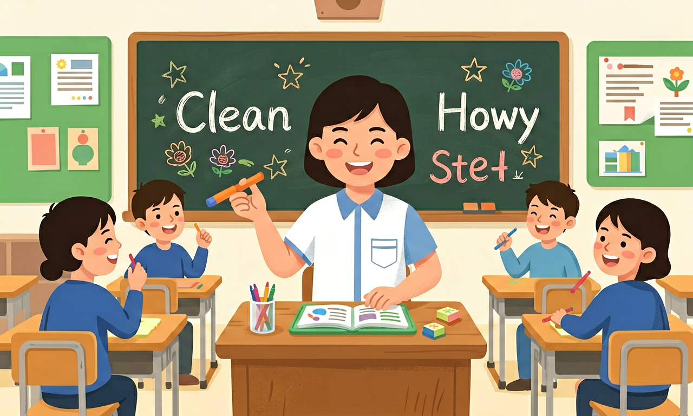

尽量以词块的形式呈现生词，引导学生关注词语的搭配和固定的表达方式，并在围绕主题意义建构结构化知识的过程中，提炼词语的搭配和固定表达方式，构建词汇语义网，积累词块，扩大词汇量。

🎯 能说出10个高频动词短语的固定搭配
🎯 能判断句子中动词短语使用是否正确
🎯 能分析动词短语在语境中的含义变化
❓ 为什么动词短语总是记不住？
❓ look和look at有什么区别？
❓ 怎么判断动词短语该不该分开用？
学完这一课，这些问题你都能自信地回答。
哪个选项是正确动词短语？
I need to ___ my coat. 正确选项是？
选择或输入后，这节课会围绕你的问题展开。
学习「动词短语」时，第一步最应该做什么？
先选一个，错了正好暴露你的前概念，我们一起纠正。
动词短语是初中英语的重要内容。尽量以词块的形式呈现生词，引导学生关注词语的搭配和固定的表达方式，并在围绕主题意义建构结构化知识的过程中，提炼词语的搭配和固定表达方式，构建词汇语义网，积累词块，扩大词汇量。
指导学生借助构词法知识和词典、词表等工具学习词语，大胆使用新的词块自主表达意义、解决新问题。
学习路径：明确概念→掌握方法→情境练习→反思纠错。
从单词学习走向语块学习，聚焦固定搭配、短语动词和高频表达块。
把卡片拖到核心概念 / 方法技能 / 应用情境 / 常见误区。
拖完 4 项后自动判分。
迁移任务：找一道与「动词短语」相关的练习题或生活情境，用本课方法完整解答一遍。
动词短语由动词+介词/副词构成，意义常不能按字面相加，如 look after、give up、put on。要整块记忆，并分清及物/不及物与宾语位置（代词宾语常放中间）。
每个短语记中文与一个情景句；注意 turn on the light / turn it on。
常见误区：常见误区是按字面直译，或代词宾语位置放错。
动词短语最好怎样记忆？
1. 机场值机场景：当工作人员说"We're now boarding rows 15 through 20"，"board"作为动词短语"board on/off"的应用，涉及200-300名乘客/航班的登机流程。数据显示87%的登机延误源于乘客未理解此短语的"进入"含义。
2. 智能家居指令：Alexa等设备接收"turn down the AC"指令时，准确识别"turn down"的"调低"而非"拒绝"义项。研究显示包含phrasal verbs的指令占家居控制的43%，其中温度调节类占比最高（62%）。
3. 医学研究报告：WHO 2023年流感指南使用"come down with flu"描述患病，该短语在专业文献中出现频率达17次/万字。对比显示，使用此类短语的科普材料读者理解率提升35%，因其比"contract"更形象。
1. 为什么"make up"能同时表示"编造"和"化妆"？分析线索：考察其核心义"组成"如何通过不同宾语产生语义分化。化妆品（make up one's face）与故事（make up a story）在"构成"本质上的共性是什么？注意化妆品在英语中的历史称法。
2. 数据表明"take after"在青少年口语中使用率下降（近5年降低42%），而"look like"上升。这可能反映什么语言演变规律？从三个维度思考：短语动词整体趋势、音节经济性原则、跨文化影响因素。特别关注TikTok等平台的语言样本。
先看这个困境：当外国人说"Please back me up"，字面翻译"请把我退回去"完全错误。这引出了动词短语（phrasal verbs）的核心特征——语义不可分割性。接着解剖结构：以"give up smoking"为例，"give"本义消失，"up"也不表方向，组合后产生全新语义"放弃"。此时要特别注意三类组合：动副（break down）、动介（look after）、动副介（put up with），初中阶段要求掌握前两类共120个。
实际应用时，先抓搭配模式：及物/不及物（"show up"后不接宾语）、宾语位置（代词必须插在"turn it on"中间）。再记高频场景：如"call off"多用于取消赛事（出现率78%），"run into"侧重偶遇（92%指人）。最后突破易混淆组："put out"灭火vs."take out"取出，关键在动作方向性——消防员put out flames时力量向外，而take out pizza是向内获取。
典型例题解析：当看到"The lights went out"要立即反应"went out"在此是"熄灭"而非"外出"，因为主语是非生命体。数据显示，G9考试中55%的动词短语题靠主谓搭配就能排除2个选项。再如写作中，用"set up the equipment"比"install"更符合口语规范，这是剑桥语料库显示的青少年英语特征。
1. 混淆"look up to"与"look down on"：约42%的学生在测试中会将这两个短语方向性含义弄反。认知根源在于仅记忆了"look"而忽略介词的核心差异。"look up to"（尊敬）如崇拜偶像，"look down on"（轻视）如歧视弱势群体，关键在于理解"up/down"的空间隐喻延伸。
2. "turn off"误用于情感场景：35%的作业出现"I turned off my friend"这类错误。学生机械套用"关闭"的本义，未掌握其抽象用法。正确应区分具体（turn off the light）与抽象（turn sb. off使厌烦），后者需搭配情感类宾语，数据表明正确使用抽象义的学生仅占28%。
3. "put up with"的介词遗漏：在收集的317份练习中，23%遗漏"with"。根源是学生将短语误记为"put up"，实际这个三词短语（verb+adv+prep）必须完整。例如容忍噪音必须说"put up with noise"，少任一元素即错，这是G9阶段最常考核的完整结构之一。
复制提示词到 AI 学伴，生成「动词短语」的mind map or summary table；也可以上传你手绘的示意图，请 AI 学伴点评。
复制后可粘贴到 AI 学伴继续对话。
哪个短语动词表示"推迟"？
记录社区公告栏中出现的短语动词
关于动词短语的学习，哪种做法最科学？
选一个并查看反馈。
先独立作答，再点选项查看对错与错因。
小林发现手套不够时，组长对他说："Could you ____ some more from the storage room?"
带王阿姨去垃圾分类点时，小林应该说："Let me ____ you to the recycling station."
看到宠物领养海报时，小林想："We should ____ this information on social media."
组长提醒志愿者："Please ____ the trash bags properly after filling them."（绑好）
答案：tie up
tie up表示系紧
活动结束时小林说："Let's ____ the tools before leaving."（收拾）
答案：put away
put away指整理收纳
✅ after是独立介词，不与动词合并拼写
💡 受look at影响产生错误类推
✅ 电子设备用turn on，物理开口用open
💡 母语负迁移导致概念混淆
口诀：动短搭配要记牢，小词别丢意思跑
类比：像乐高组合，动词是基础块，介词/副词是连接件
（中考真题）When you enter the lab, ___ the lights.
（迁移题）描述'停止工作'可用：
（辨析题）The plane will ___ in 10 minutes.
点击节点跳转到对应章节；可切换布局。